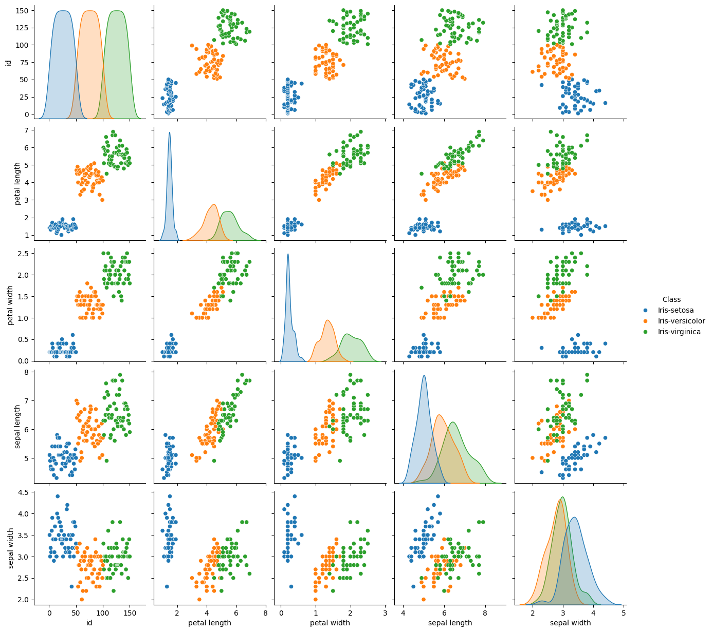
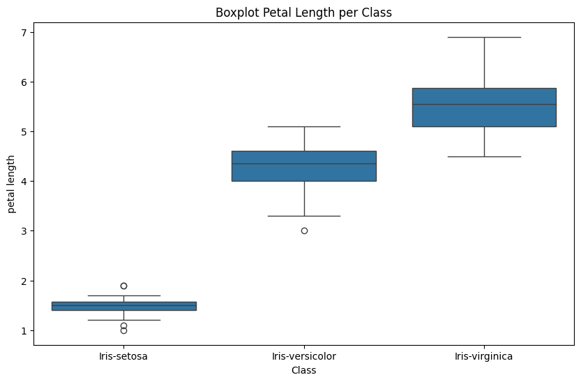
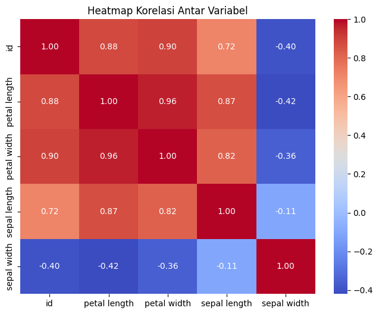

Tugas 1#
import os
file_path = "/content/iris.xlsx"
if os.path.exists(file_path):
print("File ditemukan!")
else:
print("File tidak ditemukan!")
File tidak ditemukan!
Membaca file Excel
Menampilkan daftar sheet yang tersedia
Mengambil data dari sheet bernama “mysql”
import pandas as pd
file_path = "/content/iris.xlsx"
xls = pd.ExcelFile(file_path)
print("Sheet yang tersedia:", xls.sheet_names)
# Baca sheet pertama (misal "mysql")
df_mysql = pd.read_excel(xls, sheet_name="mysql")
print(df_mysql.head()) # Menampilkan 5 baris pertama
---------------------------------------------------------------------------
FileNotFoundError Traceback (most recent call last)
Cell In[2], line 5
1 import pandas as pd
3 file_path = "/content/iris.xlsx"
----> 5 xls = pd.ExcelFile(file_path)
6 print("Sheet yang tersedia:", xls.sheet_names)
8 # Baca sheet pertama (misal "mysql")
File ~/.local/lib/python3.12/site-packages/pandas/io/excel/_base.py:1550, in ExcelFile.__init__(self, path_or_buffer, engine, storage_options, engine_kwargs)
1548 ext = "xls"
1549 else:
-> 1550 ext = inspect_excel_format(
1551 content_or_path=path_or_buffer, storage_options=storage_options
1552 )
1553 if ext is None:
1554 raise ValueError(
1555 "Excel file format cannot be determined, you must specify "
1556 "an engine manually."
1557 )
File ~/.local/lib/python3.12/site-packages/pandas/io/excel/_base.py:1402, in inspect_excel_format(content_or_path, storage_options)
1399 if isinstance(content_or_path, bytes):
1400 content_or_path = BytesIO(content_or_path)
-> 1402 with get_handle(
1403 content_or_path, "rb", storage_options=storage_options, is_text=False
1404 ) as handle:
1405 stream = handle.handle
1406 stream.seek(0)
File ~/.local/lib/python3.12/site-packages/pandas/io/common.py:882, in get_handle(path_or_buf, mode, encoding, compression, memory_map, is_text, errors, storage_options)
873 handle = open(
874 handle,
875 ioargs.mode,
(...)
878 newline="",
879 )
880 else:
881 # Binary mode
--> 882 handle = open(handle, ioargs.mode)
883 handles.append(handle)
885 # Convert BytesIO or file objects passed with an encoding
FileNotFoundError: [Errno 2] No such file or directory: '/content/iris.xlsx'
menggabungkan dua dataset dari sheet “mysql” dan “postgresql” berdasarkan kolom “id” dan “Class”, lalu menampilkan hasilnya.
# gabungan mysql dan postgresql bedasarkan id dan class
# Baca sheet 'postgresql'
df_postgresql = pd.read_excel(xls, sheet_name="postgresql")
# Gabungkan berdasarkan kolom 'id' dan 'Class'
df_merged = pd.merge(df_mysql, df_postgresql, on=["id", "Class"], how="inner")
print(df_merged.head())
id Class petal length petal width sepal length sepal width
0 1 Iris-setosa 1.4 0.2 5.1 3.5
1 2 Iris-setosa 1.4 0.2 4.9 3.0
2 3 Iris-setosa 1.3 0.2 4.7 3.2
3 4 Iris-setosa 1.5 0.2 4.6 3.1
4 5 Iris-setosa 1.4 0.2 5.0 3.6
visualisasi data dari DataFrame df_merged dengan menggunakan Seaborn dan Matplotlib.
# visualisasi data
import seaborn as sns
import matplotlib.pyplot as plt
# Scatter plot antar variabel
sns.pairplot(df_merged, hue="Class")
plt.show()
# Boxplot petal length per Class
plt.figure(figsize=(10, 6))
sns.boxplot(x="Class", y="petal length", data=df_merged)
plt.title("Boxplot Petal Length per Class")
plt.show()


menggabungkan data dari dua sheet dalam file Excel dan memvisualisasikan distribusi data berdasarkan kelas (Class).
import pandas as pd
import seaborn as sns
import matplotlib.pyplot as plt
# Load dataset dari Excel
file_path = "/content/iris.xlsx" # Sesuaikan path jika di Google Colab
xls = pd.ExcelFile(file_path)
# Baca sheet mysql dan postgresql
df_mysql = pd.read_excel(xls, sheet_name="mysql")
df_postgresql = pd.read_excel(xls, sheet_name="postgresql")
# Merge kedua dataframe
df = pd.merge(df_mysql, df_postgresql, on=["id", "Class"], how="inner")
# Cek apakah df sudah terdefinisi
print("Dataframe berhasil dimuat:")
print(df.head()) # Menampilkan 5 baris pertama
# plt.figure(figsize=(10, 6))
# sns.scatterplot(x=df["petal length"], y=df["sepal length"], hue=df["Class"])
# plt.xlabel("Petal Length")
# plt.ylabel("Sepal Length")
# plt.title("Perbandingan Panjang Petal dan Sepal")
# plt.legend()
# plt.show()
# sns.pairplot(df, hue="Class", diag_kind="kde")
# plt.show()
plt.figure(figsize=(12, 6))
plt.subplot(1, 2, 1)
sns.boxplot(x="Class", y="petal length", data=df)
plt.title("Boxplot Petal Length per Class")
plt.subplot(1, 2, 2)
sns.boxplot(x="Class", y="sepal length", data=df)
plt.title("Boxplot Sepal Length per Class")
plt.figure(figsize=(12, 6))
# Boxplot untuk Petal Width
plt.subplot(1, 2, 1)
sns.boxplot(x="Class", y="petal width", data=df)
plt.title("Boxplot Petal Width per Class")
# Boxplot untuk Sepal Width
plt.subplot(1, 2, 2)
sns.boxplot(x="Class", y="sepal width", data=df)
plt.title("Boxplot Sepal Width per Class")
plt.show()
plt.show()
Dataframe berhasil dimuat:
id Class petal length petal width sepal length sepal width
0 1 Iris-setosa 1.4 0.2 5.1 3.5
1 2 Iris-setosa 1.4 0.2 4.9 3.0
2 3 Iris-setosa 1.3 0.2 4.7 3.2
3 4 Iris-setosa 1.5 0.2 4.6 3.1
4 5 Iris-setosa 1.4 0.2 5.0 3.6
menampilkan heatmap korelasi antar variabel numerik dalam dataset menggunakan Seaborn dan Matplotlib.
plt.figure(figsize=(8, 6))
sns.heatmap(df.select_dtypes(include=["number"]).corr(), annot=True, cmap="coolwarm", fmt=".2f")
plt.title("Heatmap Korelasi Antar Variabel")
plt.show()

menampilkan seluruh DataFrame df_merged dalam bentuk tabel interaktif di Jupyter Notebook atau Google Colab.
from IPython.display import display
# Menampilkan semua data dalam bentuk tabel
display(df_merged)
| id | Class | petal length | petal width | sepal length | sepal width | |
|---|---|---|---|---|---|---|
| 0 | 1 | Iris-setosa | 1.4 | 0.2 | 5.1 | 3.5 |
| 1 | 2 | Iris-setosa | 1.4 | 0.2 | 4.9 | 3.0 |
| 2 | 3 | Iris-setosa | 1.3 | 0.2 | 4.7 | 3.2 |
| 3 | 4 | Iris-setosa | 1.5 | 0.2 | 4.6 | 3.1 |
| 4 | 5 | Iris-setosa | 1.4 | 0.2 | 5.0 | 3.6 |
| ... | ... | ... | ... | ... | ... | ... |
| 145 | 146 | Iris-virginica | 5.2 | 2.3 | 6.7 | 3.0 |
| 146 | 147 | Iris-virginica | 5.0 | 1.9 | 6.3 | 2.5 |
| 147 | 148 | Iris-virginica | 5.2 | 2.0 | 6.5 | 3.0 |
| 148 | 149 | Iris-virginica | 5.4 | 2.3 | 6.2 | 3.4 |
| 149 | 150 | Iris-virginica | 5.1 | 1.8 | 5.9 | 3.0 |
150 rows × 6 columns